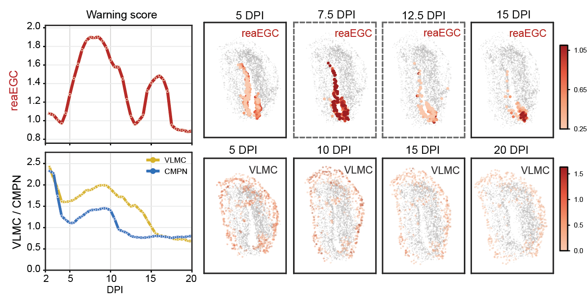

Joint state, two coordinate systems
x = (s, z) keeps tissue position s separate from the graph-informed molecular state z, while time conditions both components.
Spatiotemporal Critical Transition Decipherer (stCTD)
From staged spatial snapshots to dynamic transition hypotheses
Spatial transcriptomics measures molecular state and tissue position, but each stage is a destructive snapshot of a different sample. stCTD learns a continuous field that couples tissue-space transport, potential-driven gene-state motion, and source-sink growth. The same field reconstructs intermediate states and nominates critical-transition windows.
Model overview
Each cell or spot is represented by its two-dimensional tissue position and a graph-informed gene-latent state. stCTD learns spatial advection, gene-state potential, and source-sink growth as distinct but coupled components.

a. Staged spatial dynamics. Observed sections are destructive snapshots; generated intervals and continuous paths are model reconstructions.
b. Training stCTD. Tissue coordinates, graph-informed gene embeddings and time labels define a joint state. Separate networks learn spatial velocity, gene potential and source-sink growth under matching, spatial, physical and dynamic objectives.
c. Linked readouts. The same fitted fields generate intermediate slices, abundance trajectories, model-inferred allocations, critical-transition scores and in silico perturbation hypotheses.
x = (s, z) keeps tissue position s separate from the graph-informed molecular state z, while time conditions both components.
ds/dt describes tissue movement, dz/dt follows the negative gene-potential gradient, and d log w/dt captures source-sink abundance change.
The interval score combines high-quantile stepwise potential change with adjacent spatial transport. The rising edge is reported as onset; a later maximum is secondary context.
Method design
The method is designed for staged tissues in which spatial reorganisation, molecular progression and abundance change may occur on different schedules.
Spatial position and molecular state remain separate coordinates, while a growth field explicitly permits cell or spot mass to increase or decrease along the reconstructed trajectory.
The transition score integrates potential reorganisation with adjacent spatial redistribution. Its first sustained rise is interpreted before the later endpoint becomes visually dominant.
Generated snapshots, abundance trajectories, source allocations and perturbation rollouts are read from the same dynamics instead of being assembled from unrelated downstream models.
Interactive trajectories
Frame-accurate playback exposes the model rollout rather than replaying observed cells. Synthetic systems test known branch and shape changes; real-data panels show continuous reconstructions for mouse dorsal midbrain, zebrafish and axolotl brain.
Downstream interpretation
These panels translate reconstructed dynamics into transition timing, source allocation and perturbation hypotheses. They remain model-derived rather than direct lineage or causal evidence.

The interval score combines high-quantile potential change with adjacent spatial transport. The rising edge marks a candidate onset; later maxima provide secondary context.
Open PDF
Alluvial panels follow mass from a selected source annotation through the fitted field. They summarize model-inferred allocation, not clonal lineage tracing.
Open PDF
Gene-state shifts are rolled through the learned dynamics to compare terminal-state probabilities. Efna5 and Fzd3 are hypotheses for validation, not established causal regulators.
Open PDF
Literature-supported receptor and signalling routes contextualize the Efna5 and Fzd3 responses. The diagrams do not claim that every displayed edge is a direct target.
Open PDFFinal figures
Select a figure to inspect its final preview, panel-by-panel legend and PDF. Interactive trajectory playback remains in the dedicated section above.
Model overview
The graphical abstract introduces the core problem, model structure, and major outputs.
Evidence route
The manuscript moves from model definition to controlled recovery, a primary developmental case, two transfer settings and a final scope comparison.
Defines the joint state, spatial-potential-growth fields and the linked downstream readouts.
Tests known branch geometry, source-sink abundance and the designed critical rise from synthetic time t=1.
Connects E12.5-E16.5 dorsal-midbrain reconstruction with an E13.5 warning rise and model-derived Efna5/Fzd3 responses.
Tests 10-18 hpf reconstruction, branch-resolved transition timing and programme-level interpretation in zebrafish.
Pairs 2-20 DPI injury reconstruction with a pre-15 DPI reaEGC warning rise and later state redistribution.
Compares supported functions and spatial/state reconstruction against complementary baseline methods.
Evidence map
This map separates model definition, controlled validation, biological applications and comparison evidence so that each claim remains tied to a specific figure.
Claim discipline
stCTD converts staged observations into testable dynamic hypotheses. Three distinctions should remain explicit when reading the results.
Observed stages come from different samples. Generated paths and alluvial flows are model-inferred allocations, not direct lineage tracing.
The score is an early-warning heuristic built from fitted potential change and spatial transport. It nominates intervals for follow-up.
Perturbation rollouts prioritize candidate genes and response directions; they do not replace CRISPR, pharmacological or in vivo validation.